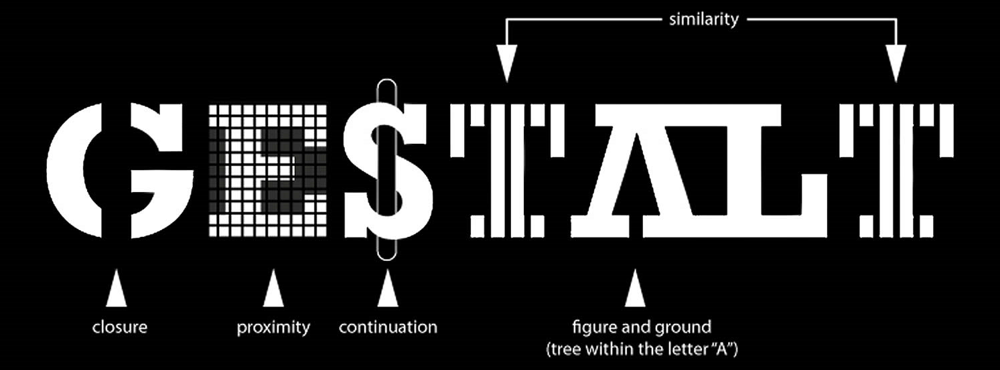
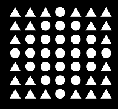
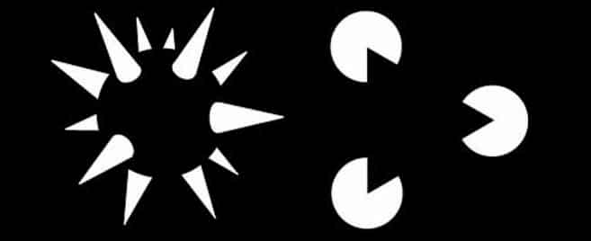
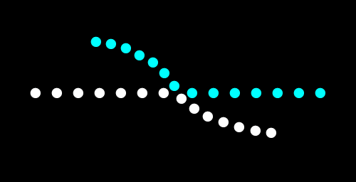
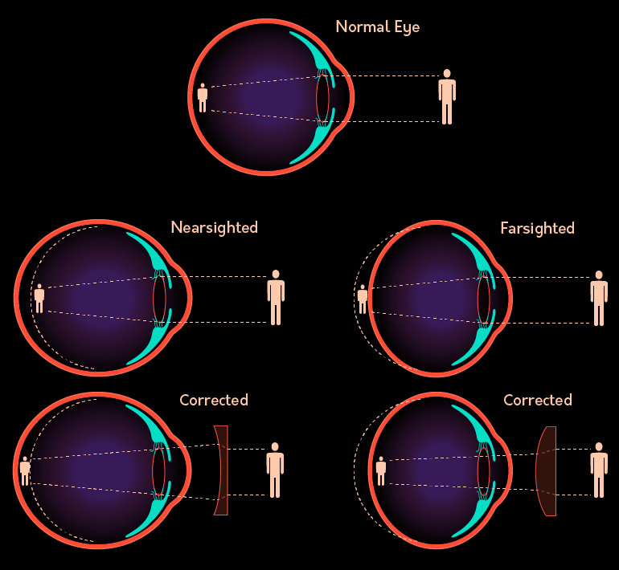
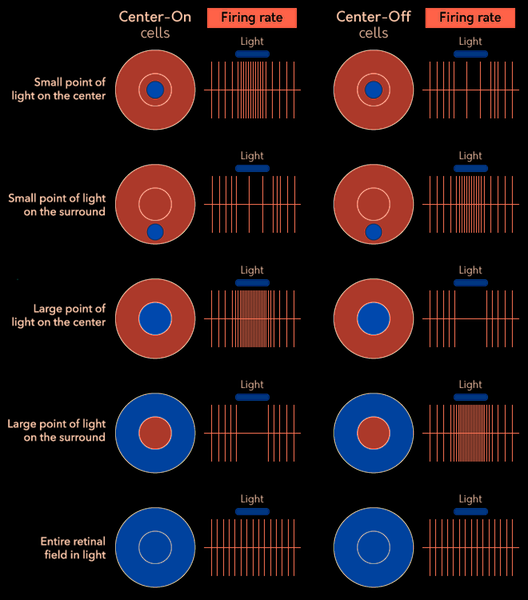
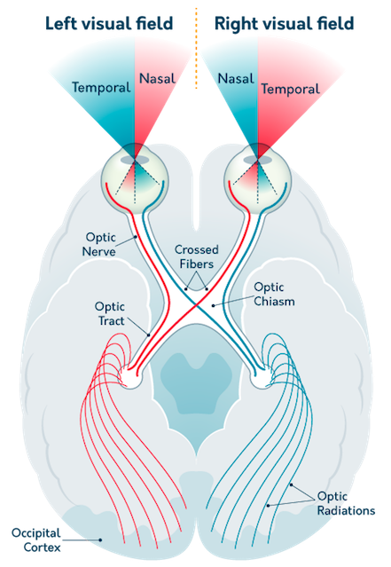
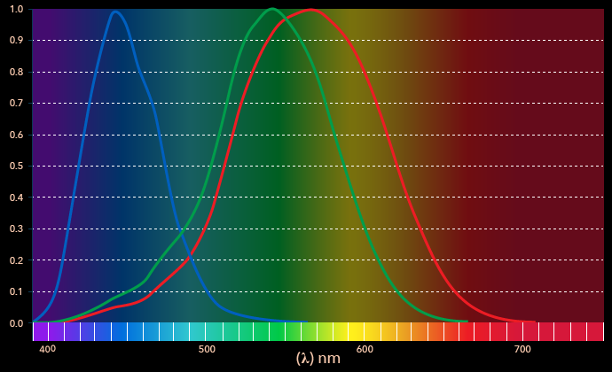
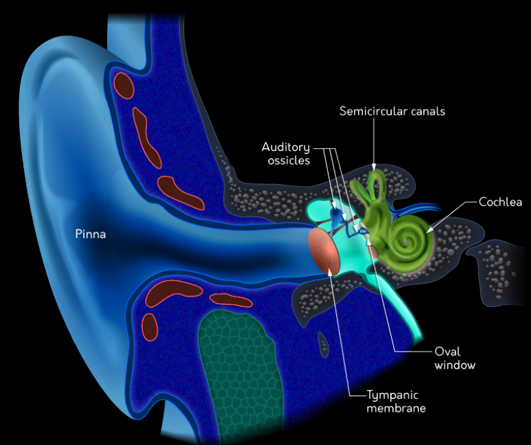

Summary
- Sensation is the process of using our senses (i.e., vision, hearing)
to detect stimuli or information in our environment, and perception is
the process of identifying that sensory information and combining it
with our previous knowledge to create our current experience.
- The primary purpose of sensation is to transform signals in the
world (e.g., light, sound, and touch) into the electrochemical language
of the brain.
- Bottom-up processing involves how we understand basic sensory
information, while top-down processing involves recruiting our prior
experience or our expectations to help us understand the sensory
message.
- The eye is composed of several major structures, including the lens
and the retina, which transduce light into the electrochemical language
of the brain.
- Rod and cone cells are responsible for the transduction of light,
and the resulting information is sent to the brain via the optic nerve,
which is made up of specialized ganglion
- The occipital lobe processes visual information and contains feature
detectors (such as simple cells and complex cells) that help us
construct a picture of the world around us. This information is
understood spatially by the dorsal stream (“where is it?”), while the
ventral stream understands its content (“what is it?”).
- Trichromatic theory explains how we understand color via the
“mixing” of light, while opponent process theory explains afterimages
and the importance of the color yellow.
- Depth cues enable us to understand how far away objects are in
space. Monocular cues require input from only one eye, while binocular
cues require input from both eyes.
- The ear has three major sections: the outer, middle, and inner ear.
The outer portion funnels sound into the ear, the middle portion
amplifies it, and the inner portion transduces sound into the
electrochemical language of the brain.
- Place theory describes how the location of neural firing on the
basilar membrane indicates the pitch of a sound, while frequency theory
describes how the firing rate of neural cells is also indicative of
pitch.
- Chemoreceptors in the nose and tongue allow us to smell and taste;
this is accomplished by olfactory receptor neurons in the nose and
papillae on the tongue.
- Mechanoreceptors are responsible for the sense of touch,
thermoreceptors allow us to sense temperature, and nociceptors process
nociceptive pain.
- Pain can be interpreted through the gate-control theory, which
implies that the perception of pain is controlled by the spinal cord and
is both context dependent and can also be somewhat subjective.
- Sensory centers in the brain are organized based on space
(retinotopic and somatotopic organization for vision and touch) as well
as pitch (tonotopic organization for sound).
- We understand where our bodies are in space via our kinesthetic
sense.
- The vestibular sense helps us keep our balance.
- Signal detection and its relationship to absolute thresholds allow
us to understand the limits of when a person can detect a
sensation.
- Weber’s Law describes that we are more likely to notice the
difference between two stimuli when the difference between them grows
proportionally larger.
Foundations
- brain is completely isolated from the surrounding environment
- bee uses ultraviolet light
- aquatic mammals use low-frequency calls
- owls use audition
- turtles use magnetic field
- ants use smelll
- there’s nothing special about vision, smell, sound, or taste
- it’s what we do with that information that makes it
special
- sensation: featurs of the environment the brain use to
create an understanding of the world
- transduced, translated by the sensory system into the
eletrochemical language of the brain
- the brain takes the message and combines it with previous experience
to create perception
- eg headbanging on the beats: sensation
- eg drawing a person: perception
TD and BU Processing
perception is only partly based on the information
coming from the world, but we also use memories about
the way the world works to interpret the messages - once you make sense,
you won’t be able to see it as nonsense again
- bottom-up processing
- starts with the physical message/sensations
- top-down processing
- combine incoming neural message with our understanding of the world
to interpret information
The Principles of Gestalt

Gestalt principles of
organisation - principle of figure-ground: information is
given priority over the background
-
principle of proximity: objects that are close to one another
will be grouped together
- principle
of similarity: objects that are physically similar to one
another will be grouped together

-
principle of closure: tend to perceive whole objects even when
part of that information is missing

-
principle of good continuation: if lines cross each other or
are interrupted, tend to still see continunously flowing lines

- principle of common fate: moving
together will be grouped together
Vision: Light to Sight
20% of the cortex plays a role in the interpretation of visual
information
- light is a form of eletromagnitic radiation
- we are only able to see 400-700 nanometers of light
- wave of light enters the eye
- ⇒ light goes through the cornea (transparent covering of
the eye)
- ⇒ light enters eye through the pupil (hole that expands and
contracts by the muscles attached tho the iris)
- ⇒ behind pupil, light travels through the lens (flexible
piece of tissue that focuses light on the retina)
- ⇒ eye adjusts its behavior to maximise the quality of light that
reaches the sensory cells (photoreceptors) in retina
(thin layer of tissue on the back)
- ⇒ in retina, rods and cones transduce energy into
neural language
- rods: highly sensitive, respond to low level of ligfht
(periphery of the retina)
- cones: high accuracy, process early information about color
(fovea: highest concetration of cones, center)
corrected-vision

light to visual cortex
- cornea
- pupil
- lens
- rods/cones
- diffuse/midget bipolar cells
- M/P-cells (ganglion)
- optic chiasm
- LGN
- VC
Retina
- rods and cones react to light
- ⇒ send message to bipolar cells
- diffuse bipolar cells receive messages from
multiple rods
- add together the experience of the photoreceptors and send a single
message to the ganglion cell
- midget bipolar cells receive from only a single
cone
- send message to only a single ganglion cell
- ganglion cells
- P(arvo)-cells: smol, receive from the midget bipolar cells
- 70% of the ganglion cells
- send signals to the brain about qualities of color and detail
- M(agno)-cells: large, in periphery, receive signals from
diffuse bipolar cells
- send information about motion and visual stimuli in the
periphery
firing rate
- center-on
- more light in center ⇒ more firing rate
- more light in surround ⇒ less firing rate

- blind spot
- the place where the axions of the ganglion cells leaves the eye
Visual Cortex
message from the optic nerve travels to the optic chiasm (optic
nerves from each eye cross before the message is sent to the thalamus)
image

- LGN: lateral geniculate nucleus in
thalamus
- relay center
- sensory information is analysed and reorganised before the message
travels to the cortex
- visual cortex (VC) is located in the occipital lobe
- important features of the visual world are assembled and
identified
- every neuron maintains a spatial organisation (retinotopic
organisation)
- feature detectors are specialised cells in the VC that
respond most actively to specific stimuli
- eg of feature detectors
- simple cell responds to small stationary bars of light
oriented at specific angle
- complex cell responds most vigorously to vertical lines in
motion
- pathways
- information travels along the ventral stream (What stream)
to the temporal lobe
- visual information is identified
- you know what you are looking at
- dorsal stream (Where pathway) carries visual information
the the parietal lobe
- understand the information
- visual information travels to the limbic system
Color Vision (Cones)
color is the perception of wavelength
- trichromatic theory proposes that color information is
identified by comparing the activation of different cones in the retina
- S(hort wl)-cones respond to blue
- M(edium wl)-cones respond to green
- L(ong wl)-cones respond to red
- explains color blind: cells respond equally to the two wavelengths ⇒
cannot perceive a difference between them

Opponent Process
- trichromatic theory doesn’t explain all aspects
- opponent process theory: cells in the visual pathway
increase their activation when receiving information from one kind of
cone and decrease when they see a second color
- maintained in the LGN (thalamus)
- afterimage: opposite color
- white – black
- red – green
- blue – yellow
Perceiving Depth
monocular depth cues requires only one eye
binocular depth cues requires two eyes
Monocular
aka pictorial cues, can be represented on a 2d canvas
- occlusion: the close object partially blocks the view of
the far object
- relative height: the close object is closer to the
horizon
- relative size: if two objects are the same size, the close
one seems bigger
- perspective convergence: parallels lines that move aways
from us seem to converge together
- familiar size: use previous knowledge of the object’s size
(eg buildings, stars)
- atmospheric perspective: far objects appear hazy/blue tint
(eg mountains)
Binocular
making comparasions between the two eyes to understand depth
- retinal disparity: difference between the retinal image
that falls on both eyes
- used to calculate the distance
Hearing and Sound
mechanical energy
- frequency: rate of vibrations
- hight freq = high pitch (20-20 000Hz)
- intensity: loudness/amplitude (dB)

- sound enters through pinna
- help filter sound into the ear canal toward the tympanic
membrane (eardrum) - transfers energy to ossicles(malleus,
incus, stapes), help amplify the vibrations - staples is connected to
oval window - transfers vibrations to cochlea (sound
processor), transferred into neural language - trasnduction: vibration
against the window cause fluid inside the cochlea to move - inside
cochlea: basilar membrane - hair cells: sensory
neurons that convert sound into neural firing - place theory:
we understand pitch because of the location of firing on the basilar
membrane - but doesn’t explain the experince of hearing - hair cells
don’t operate independently, many are activated at the same time -
frequency theory: brain uses information related to the rate fo
cells firing - fire faster = higher the perception of pitch
Auditory Cortex
- different components of sound are organised and analysed in the
medial geniculate nucleus (in thalamus)
- majority of info is relay to the auditory cortex (in
temporal lobe)
- tonotopic organisation: has what and
where stream
Sound Localisation
- binaural cues: require comparasions from both ears to
understand an object’s location
- interaural time difference
- comparasion between the arrival time of a sound
- localise sounds from left/right
- eg binaural recording captures 3d soundscape, info about
the size of the room, location of sources of noise
- interaural level difference
- closest ear perceive the sound louder
Music and Speech
Music
- melody: nothing special about a sequence of notes, but our
experiences with music and the sequences of notes that give them
coherence
- involuntary musical imagery: the experience of an inability
to dislodge a song and prevent it from repeating itself in one’s head
- teach us about auditory memory
Speech
- the production of speech has three basic component parts
- respiration from the lungs
- the vocal cords
- vocal tract
- McGurk effect
- auditory perceptions are influenced by visual information
- use visual to understand ambiguous sounds
Chemical Senses
perceptions of smell and taste begin with activation of
chemoreceptors (sensory cells that respond to properties in air
molecules)
- sensations from both smell and taste are combined in to
orbitofrontal cortex (OFC)
- alse receive info from the visual what pathway
- contains bimodal neurons: respond to more than one
sense
- where flavor perception occur
Smell
dont first go through the thalamus ### Chemical
Process - airbone molecuse interact with receptor sites in the mouth and
nose - drawn into the upper nasal cavity - olfactory receptors (~400
types) bind to the cilia of hair celles embedded in the olfactory
mucosa (chemoreceptors of the nose) - odorants will come into
contact with the olfactor receptor neurons (ORN) - ORN sends
their mesage to glomeruli (the olfactor blub) in the brain -
ORNs are sensitive to specific odorants - all ORNs of a particular type
send signals to just one/tew glomeruli
Taste
relies on the correlation between the molecular properties of a
substance and the effect of that substance on the body
- most people are aware of sweet, salty,
sour, bitter
- recently reseacher have also identified the tast
うまみ(savory)
- taste begins on the tongue (coverd with little bumps called
papillae (tastbuds))
- filiform papilae: entire surface, gives tongue fuzzy
appearance (no taste buds)
- fungiform papillae: tips and side
- foliate papillae: back
- circumvallante papillae: back
- each taste bud has 50-100 taste-senstive cells (taste pore)
- transduction: chemicals bind to the receptor sites on the taste
pore
- message sent through a systemo of afferent nerves to the brain
and to the stomach
Skin and Body Senses
- the physical message of touch is pressure
- object makes contact with the body
- receptor cells respond, message sent to the spinal cord to the
somatosensory cortex of the parietal lobe
- more info is derived from the responses of 4 types of
mechanoreceptors
- mechanoreceptors
- Merkel receptor and Meissner corpuscle (close to
the surface) respond to pressure that is applied and then removed
- Merkel fire continuously, Meissner fires only when the pressure is
removed
- Ruffini cylinder and Pacinian corpuscle
- Ruffini is associated with interpreting the stretching of the
skin
- Pacinian feels vibration and texture
- somatotopic organisation two adjacent points on the skin
are mapped by adjacent points on the cortex
Temperature
- thermoreceptors detect changes in temperature
- cold fibers respond by increasing their firing rate to objects that
are cool to the touch
- warm fibers increase firing to heat
- they also fire to chemical stimuli
Pain
tissue damage, but very subjective
- nociceptors dectect pain and send a signal to the
brain
Gate-Control Theory
- suggests that impulses that indicate painful stimuli can be blocked
in the spinal cord by signals sent from the brain
- small diameter fibers (S-fibers) fire to damaging and painful
stimuli
- transmission cell (T-cell) becomes activated
- large diameter fibers (L-fibers) fire to the brain about stimulation
that is not painful
- inhibit the activation of the T-cells
Subjective Nature
- pain is susceptible to the placebo effect
- the alleviation of pain is really a result of expectations of pain
reduction
Kinesthetic and Vestibular
Senses
Kinesthetic
basic understanding of where the body is in space
- receptors in the joints and muscles both send and receive signals
about where the body is in space
- send to the somatosensory cortex
Vestibular
sense of balance - sensory cells are located in the cochlea - respond
to movement, posture, acceleration - semicircular canals sense
changes in acceleration and rotation of the head - filled with hair
cells that respond to the force of gravity - vestibular sacs
responds to cues associated with a sense of balance and posture
Methods of Investigating
psychophysics attempts to evaluate the way the physical
experience are translated into psychological perceptions
Stimulus Detection
what is the minimum about of stimulus required to generate a
sensation
- absolute threshold: level of intesity required to create a
conscious experience
- signal detection: individual biases
- they are likely to detect more stimuli when they are presented
- likely to say that a stimulus was presend when it wasn’t (false
alarms)
- our brain is able to pick up and process info that we are not aware
of perceiving
Difference Threshold
just noticeable difference(jnd): smallest amount of
particular stimulus required for a difference in magnitude to be
detected